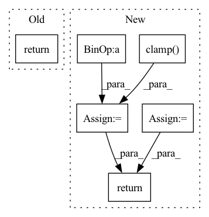

Pattern ID :1918
Before Change
wdiff = diff*self.chan_w[iconv]
wdiff = torch.sum(torch.abs(wdiff),dim=(1,2))/diff.shape[0]/diff.shape[1] // average by batch and time dimensions
dist = dist+wdiff
return self.act(dist)
class classifnet(nn.Module):
def __init__(self,ndim=[16,6],dp=0.1,BN=1):After Change
wdiff = torch.sum(torch.abs(wdiff),dim=(1,2))/diff.shape[0]/diff.shape[1] // average by batch and time dimensions
dist = dist+wdiff
if self.dist_act=="exp":
dist = torch.exp(torch.clamp( dist,max=20.) )/(10** 5) // exp(20) ~ 4*10**8
else:
dist = self.act(dist)
return dist
class classifnet(nn.Module):
def __init__(self,ndim=[16,6],dp=0.1,BN=1):In pattern: SUPERPATTERN
Frequency: 3
Non-data size: 6
Instances Fragment ID: 13380077
Project Name: adrienchaton/perceptualaudio_pytorch
Commit Name: 59552e51e4dc04c3a7cd1182ea9c257d15330a07
Time: 2020-03-11
Author: 35500385+adrienchaton@users.noreply.github.com
File Name: models.py
M Class Name: lossnet
N Class Name: lossnet
M Method Name: forward(3)
N Method Name: forward(3)
M Parent Class: nn.Module
N Parent Class: nn.Module
M File Name: models.py
N File Name: models.py
M Start Line: 64
M End Line: 65
N Start Line: 72
N End Line: 77
Before Change
self.model = model
def forward(self, score, label):
return -torch.sum(torch.log(torch.clamp(score, 1e-10, 1.0)) * torch.clamp(label, 0.0, 1.0) + \
torch.log(torch.clamp(1-score, 1e-10, 1.0)) * torch.clamp(-label, 0.0, 1.0))
After Change
def forward(self, score, label):
pos = torch.log(torch.clamp(score, 1e-10, 1.0)) * torch.clamp(label, 0.0, 1.0)
neg = torch.log(torch.clamp(1-score, 1e-10, 1.0)) * torch.clamp(-label, 0.0, 1.0)
num_pos = torch.sum(torch.clamp( label, 0.0, 1.0) , -1)
num_neg = torch.sum(torch.clamp(-label , 0.0, 1.0), -1)
loss = - torch.sum(torch.sum(pos, -1)/num_pos) - torch.sum(torch.sum(neg, -1)/num_neg)
return loss
Fragment ID: 13380089
Project Name: zjukg/neuralkg
Commit Name: 46a6149625e179eb2add8b8055322826cbce0766
Time: 2022-04-01
Author: wenzhang2015@zju.edu.cn
File Name: src/neuralkg/loss/CrossE_Loss.py
M Class Name: CrossE_Loss
N Class Name: CrossE_Loss
M Method Name: forward(3)
N Method Name: forward(3)
M Parent Class: nn.Module
N Parent Class: nn.Module
M File Name: src/neuralkg/loss/CrossE_Loss.py
N File Name: src/neuralkg/loss/CrossE_Loss.py
M Start Line: 14
M End Line: 15
N Start Line: 14
N End Line: 19
Before Change
super().__init__()
def forward(self, x):
return x
class Student(nn.Module):
def __init__(After Change
action = dist.sample()
action_log_probs = dist.log_prob(actions)
entropy = dist.entropy()
ratios = (action_log_probs - old_log_probs).exp()
advantages = normalize(rewards - old_values.detach())
surr1 = ratios * advantages
surr2 = ratios.clamp( 1 - self.eps_clip, 1 + self.eps_clip) * advantages
policy_loss = - torch.min(surr1, surr2) - self.beta_s * entropy
return policy_loss
class Student(nn.Module):
def __init__( Fragment ID: 13380101
Project Name: lucidrains/anymal-belief-state-encoder-decoder-pytorch
Commit Name: 6a860f5856bae89865c3943e580d10de277fb2ef
Time: 2022-04-17
Author: lucidrains@gmail.com
File Name: anymal_belief_state_encoder_decoder_pytorch/networks.py
M Class Name: PPO
N Class Name: PPO
M Method Name: forward(5)
N Method Name: forward(2)
M Parent Class: nn.Module
N Parent Class: nn.Module
M File Name: anymal_belief_state_encoder_decoder_pytorch/networks.py
N File Name: anymal_belief_state_encoder_decoder_pytorch/networks.py
M Start Line: 77
M End Line: 78
N Start Line: 87
N End Line: 110